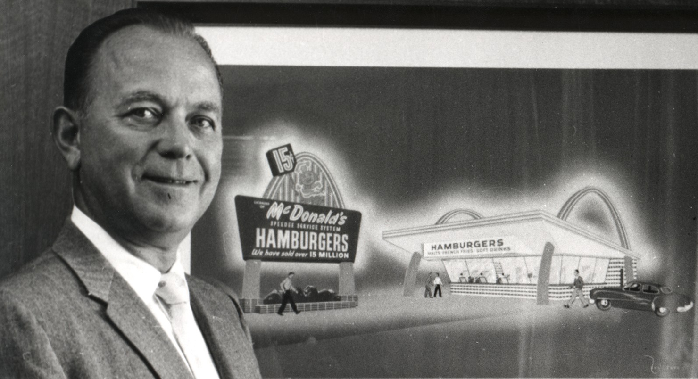

Реймонд Альберт Крок(англ. Raymond Albert Kroc, 5 октября 1902, Ок-Парк, Иллинойс — 14 января 1984, Сан-Диего, Калифорния) — американский предприниматель , ресторатор, создал компанию McDonald's. Включён журналом «Тайм» в число «100 наиболее важных людей века».
Компания основана в 1940 году братьями Диком и Маком Макдоналдами (первый ресторан
открылся в Сан-Бернардино, Калифорния), в 1948 году впервые в мире сформулировала
принципы концепции «быстрого питания».
В 1954 году Рэй Крок приобрёл у братьев Макдоналдов право выступать в качестве эксклюзивного агента
по франчайзингу. В 1955 году он открыл свой первый McDonald’s в городке Дес-Плейнсе, штат Иллинойс (в настоящее время — музей корпорации).
Позже в том же году Кроком была зарегистрирована компания McDonald’s System, Inc., в 1960 году переименована в McDonald’s Corporation.
К 1959 году количество ресторанов, открытых Кроком, превысило сотню, в 1961 году он за 2,7 млн долларов купил у Макдоналдов все права на компанию.
Также в 1961 году был открыт первый университет гамбургерологии, образовательное учреждение по подготовке кадров для пищевой отрасли, в первую
очередь для работы в системе McDonald’s. Всего в мире действует 7 таких университетов: в Чикаго (США), Токио (Япония), Сан-Паулу (Бразилия),
Лондоне (Великобритания), Мюнхене (Германия), Шанхае (Китай), Сиднее (Австралия).
Уже с начала 1960-х годов компания делала большой упор на рекламу, став одним из самых узнаваемых
брендов. В 1962 году логотипом компании стали две золотые арки, образующие букву «М»
, в следующем году был продан миллиардный гамбургер, а также для привлечения
детей был введён рыжеволосый клоун Рональд Макдональд.
В компании объяснили решение окончательно уйти с российского рынка гуманитарным
кризисом, вызванным войной, а также тем,
что сохранение бизнеса в стране «более нецелесообразно
и не соответствует ценностям „Макдоналдс“».